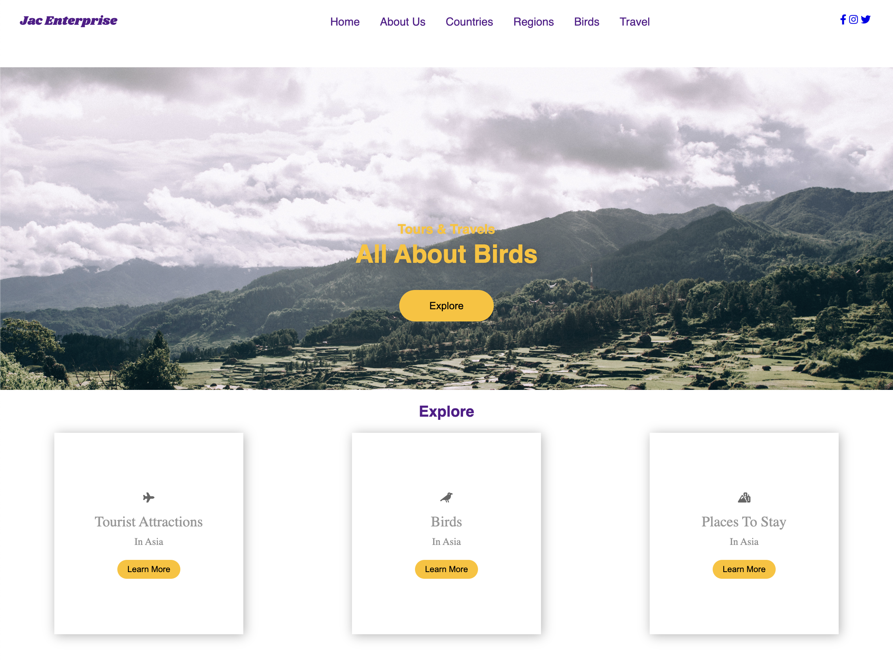

Bird Watchers
A SpringBootJPA team project utilizing OOP and MVC architecture.

After spending nearly 30 years in the Aerospace industry doing everything from inspection, to programming, to design engineering, I am now utilizing my innovative problem solving skills in the realm of Software Development.
Planned, designed, and developed professionally programmed applications in collaborative team-based and independent settings, demonstrating the proficiency to earn Software Development Certificate. Java, HTML, CSS, JavScript, React.js, SpringBootJPA, TDD, OOP, GitHub
Some of the projects that I have done as I have developed my skills in Software Development.
A SpringBootJPA team project utilizing OOP and MVC architecture.
Single page application utilizing a SpringBootJPA backend and JS React front end pulling from local as well as open-source APIs.
Coding Bootcamp four week final team project utilizing a SpringBootJPA backend and JS React with SCSS modules front end pulling from local APIs.